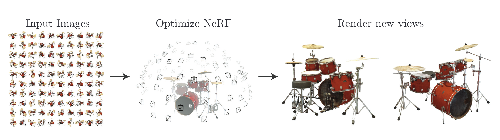
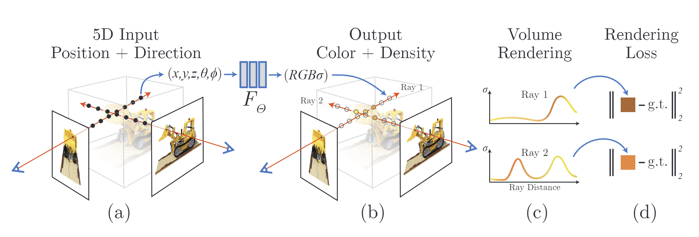
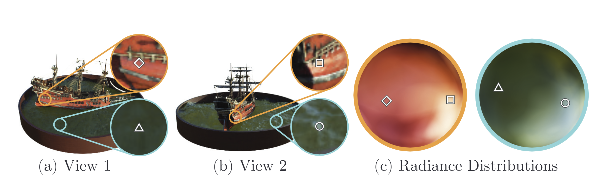
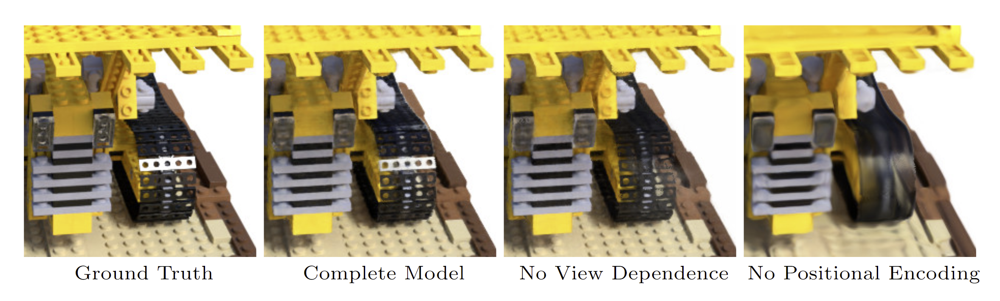

2021-12-01工作记录

工作记录
- 刷了数值分析整理的历年题目
- 看论文
- Jeong Joon Park, Peter R. Florence, Julian Straub, Richard Newcombe, & Steven Lovegrove (2019). DeepSDF: Learning Continuous Signed Distance Functions for Shape Representation Computer Vision and Pattern Recognition.
- Ben Mildenhall, Pratul P. Srinivasan, Matthew Tancik, Jonathan T. Barron, Ravi Ramamoorthi, & Ren Ng (2020). NeRF: Representing Scenes as Neural Radiance Fields for View Synthesis European Conference on Computer Vision.
论文总结
DeepSDF: Learning Continuous Signed Distance Functions for Shape Representation
摘要
~计算机图形学、3D计算机视觉和机器人社区已经产生了多种方法来表示3D几何图形以进行渲染和重建。它们提供了保真度、效率和压缩能力之间的权衡。~
在这项工作中，我们引入了DeepSDF，这是一种学习的连续符号距离函数(SDF)表示，它可以从部分和噪声的3D输入数据中进行高质量的形状表示、插值和补全。
~与经典对应的一样，~DeepSDF通过连续的体积场表示形状的曲面：
场中点的大小表示到曲面边界的距离，
符号指示该区域是在形状的内部(-)还是外部(+)，
因此，我们的表示隐式地将形状的边界编码为学习函数的零水平集，而显式地表示空间的分类是形状内部的一部分还是不是形状内部的一部分。
- 虽然解析或离散体素形式的经典SDF通常表示单个形状的表面，但DeepSDF可以表示整个形状类别。
- 此外，对于学习的3D形状表示和完成，我们展示了最先进的性能，同时与以前的工作相比，模型尺寸减小了一个数量级
结论和未来工作
DeepSDF在形状表示和完成任务中的性能明显优于适用的基准方法，同时满足表示复杂拓扑、闭合曲面的目标，同时提供高质量的形状表面法线。然而，虽然对形状的SDF进行逐点正向采样是有效的，但是形状补全(自动解码)在推理过程中需要考虑更多的时间，因为需要对潜在向量进行显式优化。我们希望通过用更有效的高斯-牛顿或类似的方法来代替adam优化来提高性能，这些方法利用了模型的解析导数。DeepSDF模型能够表示更复杂的形状，没有离散化错误，与之前的最先进结果相比，内存明显更少，如表1所示，展示了一条激动人心的3D形状学习之路。产生高质量的潜在形状空间内插的清晰能力为重建算法打开了一扇门，该重建算法操作于由这种高效编码构建的场景。然而，DeepSDF目前假设模型处于规范姿势，因此在野外完成需要在SE(3)转换空间上进行显式优化，从而增加了推理时间。最后，在单个嵌入中表示包括动力学和纹理在内的真实可能场景空间仍然是一个主要挑战，我们将继续探索这一挑战。
NeRF: Representing Scenes as Neural Radiance Fields for View Synthesis
摘要：
我们提出了一种方法，
该方法通过使用稀疏的输入视图集来优化底层的连续体积场景函数，
从而获得用于合成复杂场景的新视图的最先进的结果。
什么是稀疏的输入视图集
我们的算法使用完全连通(非卷积)的深度网络来表示场景，
其输入是单个连续的5D坐标(空间位置$(x，y，z)$和观察方向$(θ，φ)$)，
其输出是该空间位置的体积密度和依赖于视图的发射辐射度。
视图的发射辐射度？
我们通过查询相机光线上的5D坐标来合成视图，并使用经典的体绘制技术将输出的颜色和密度投影到图像中。
由于体积渲染是自然可微的，因此优化我们的表示所需的唯一输入是一组具有已知相机姿势的图像。
我们描述了
- 如何有效地优化神经辐射场，以绘制具有复杂几何和外观的场景的照片真实感新视图，
- 并演示了优于神经绘制和视图合成的前人工作的结果。
视图合成结果最好以视频形式观看，敬请读者观看我们的补充视频进行令人信服的对比。
介绍：
在这项工作中，我们以一种新的方式解决了长期存在的视图合成问题，通过直接优化连续5D场景表示的参数来最小化绘制一组捕获图像的误差。
我们将静态场景表示为一个连续的5D函数，该函数输出空间中每个点$(x，y，z)$在每个方向$(θ，φ)$上发射的辐射度，以及每个点处的密度(其作用类似于微分不透明度，控制光线通过$(x，y，z)$后累积的辐射量)。我们的方法通过从单个5D坐标$(x，y，z，θ，φ)$回归到单个体积密度和依赖于视图的rgb颜色来优化没有任何卷积层(通常称为多层感知器或mlp)的深度全连接神经网络来表示该函数。
辐射度radiance

图1：我们提出了一种从一组输入图像中优化场景的连续5D神经辐射场表示(任何连续位置的体积密度和视点相关的颜色)的方法。我们使用体绘制技术沿着光线积累场景表示的样本，以便从任何视点渲染场景。在这里，我们将在周围半球上随机捕获的100个合成鼓场景的输入视图集可视化，并且我们将从优化的NeRF表示中呈现两个新的视图。
为了渲染该神经辐射场(来自特定视点的NeRF)，我们：
- 使相机光线穿过场景以生成一组采样的3D点，
- 使用这些点及其对应的2D观察方向作为神经网络的输入，以产生一组输出的颜色和密度，
- 使用经典的体积渲染技术将这些颜色和密度累积到2D图像中。
因为这个过程是自然可微的，所以我们可以使用梯度下降来优化这个模型，通过最小化每个观测图像和从我们的表示中渲染的相应视图之间的误差来优化该模型。跨多个视图最小化该误差鼓励网络通过向包含真实底层场景内容的位置分配高体积密度和精确颜色来预测场景的相干模型。图2可视化了整个管道。

图2：概述了我们的神经辐射场场景表示和不同的渲染过程。
我们通过沿相机光线采样5D坐标(位置和观察方向)(a)，
将这些位置送入MLP以产生颜色和体密度(b)，
并使用体渲染技术将这些值合成成图像(c)。
这个渲染函数是可微分的，因此我们可以
- 通过最小化合成和ground truth观测图像之间的残差来优化我们的场景表示(d)。
我们发现，对于复杂场景，优化神经辐射场表示的基本实现不能收敛到足够高的分辨率表示，并且在每条相机光线所需的样本数方面效率低下。我们通过使用位置编码来变换输入5D坐标来解决这些问题，该位置编码使得MLP能够表示更高频率的函数，并且我们提出了分层采样过程来减少充分采样该高频场景表示所需的查询数量。
我们的方法继承了体积表示的优点：
- 两者都可以表示复杂的真实几何图形和外观，并且非常适合使用投影图像进行基于梯度的优化。
- 最重要的是，我们的方法克服了在高分辨率下对复杂场景进行建模时离散化的体素网格所带来的高昂的存储开销。
该论文的技术贡献是：
- 一种将具有复杂几何和材料的连续场景表示为5维神经辐射场的方法，参数化为基本MLP网络。
- 一种基于经典体绘制技术的可微绘制过程，我们用它来优化标准RGB图像中的这些表示。这包括分层采样策略，以将MLP的容量分配给具有可见场景内容的空间
- 将每个输入的5D坐标映射到更高维空间的位置编码，使我们能够成功地优化神经辐射场来表示高频场景内容。
我们证明了我们得到的神经辐射场方法在数量和质量上都优于最先进的视图合成方法，包括将神经3D表示与场景相匹配的工作，以及训练深度卷积网络来预测采样体表示的工作。据我们所知，本文提出了第一个连续的神经场景表示，它能够从自然环境中捕获的RGB图像中绘制出真实物体和场景的高分辨率照片真实感新视图。
相关工作：
虽然体积测量技术在新的视图合成方面取得了令人印象深刻的结果，但它们缩放到更高分辨率图像的能力从根本上受到时间和空间复杂性的限制，因为它们的离散采样-渲染更高分辨率的图像需要对3D空间进行更精细的采样。
我们通过在深度完全连接的神经网络的参数内对连续体积进行编码来绕过这个问题，这不仅产生比以前的体积方法高得多的渲染质量，而且只需要那些采样体表示的存储成本的一小部分。
Neural Radiance Field Scene Representation:
我们将连续场景表示为5D矢量值函数，其输入是3D位置$\mathbf{x}=(x，y，z)$和2D观察方向$(θ，φ)$，其输出是发射颜色$\mathbf{c}=(r，g，b)$和体密度$σ$。在实践中，我们将方向表示为三维笛卡尔单位矢量$ \rm \bf d$。我们用一个mlp网络$F_\Theta：(\mathbf{x}，\mathbf{d})→(\mathbf{c}，σ)$来近似这个连续的5D场景表示，并优化它的扫描$\Theta$以从每个输入5D坐标映射到其相应的体积密度和定向发射的颜色。
我们通过将网络限制为仅预测体积密度$σ$作为位置$\bf x$的函数，同时允许预测RGB色$ \bf c$作为位置和观察方向的函数，来鼓励表示是多视图一致的。为此，MLP $F_\Theta$首先处理具有8个完全连接层的输入3D坐标$\bf x$(使用ReLU激活和每层256个通道)，并输出$σ$和256维特征向量。然后，该特征向量与相机光线的观察方向连接在一起，并传递到另一个完全连接的层(使用ReLU激活和128个通道)，该层输出依赖于视图的RGB颜色。
参见图3，查看我们的方法如何使用输入查看方向来表示非朗伯效果(non-Lambertian effects)的示例。如图4所示，没有视图依赖(仅$\bf x$作为输入)训练的模型很难表示投射。

图3：与视图相关的发射辐射的可视化。我们的神经辐射场表示将RGB颜色输出为空间位置$\bf x$和观察方向$\bf d$的5D函数。在这里，我们在船舶场景的神经表示中可视化两个空间位置的示例方向颜色分布。在(A)和(B)中，我们显示了两个固定的3D点从两个不同的相机位置出现：一个在船舷(橙色插图)，另一个在水面(蓝色插图)。我们的方法预测了这两个三维点的镜面外观的变化，在(C)中，我们展示了这种行为是如何在整个观察方向的半球内连续泛化的。

图4：在这里，我们直观地看到我们的完整模型如何从表示依赖于视图的发射辐射以及通过高频位置编码传递我们的输入坐标中受益。删除视图从属关系可防止模型在推土机踏面上重新创建镜面反射。移除位置编码会极大地降低模型表示高频几何图形和纹理的能力，从而导致过度平滑的外观
剩下的内容就直接看论文吧，内容过多。
结论：
我们的工作直接
解决了以前使用MLP将发送的对象和场景表示为连续函数的不足。
我们证明，将场景表示为5D神经辐射场(一种MLP，其输出体密度和依赖于视图的发射辐射度作为3D位置和2D观察方向的函数)
比以前占主导地位的训练深层卷积网络以输出离散化体素表示的方法产生更好的渲染效果。
虽然我们已经提出了一种分层采样策略来提高渲染的样本效率(无论是对于训练还是测试)，但是在
研究有效优化和改进神经辐射场的技术方面仍有很大的进展。
未来工作的另一个方向是可解释性：采样表示，如voxel grids and meshes，允许对渲染视图和故障模式的预期质量进行推理，但当我们在深层神经网络的权重中编码场景时，如何分析这些问题尚不清楚。
我们相信，这项工作朝着基于真实世界图像的图形管道迈进了一步，在这种管道中，复杂的场景可以由从实际对象和场景的图像优化而来的神经辐射场组成。